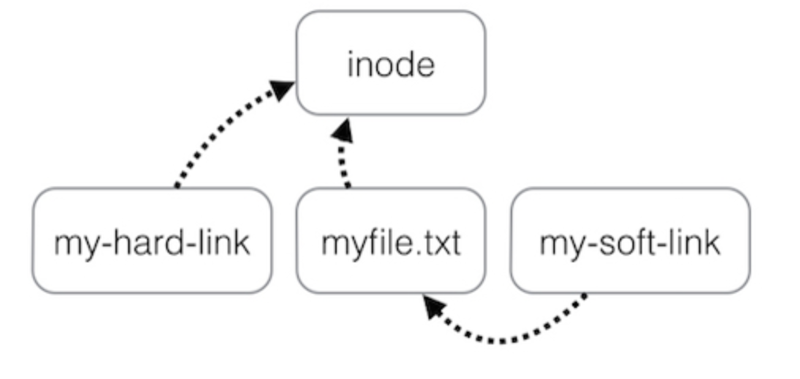
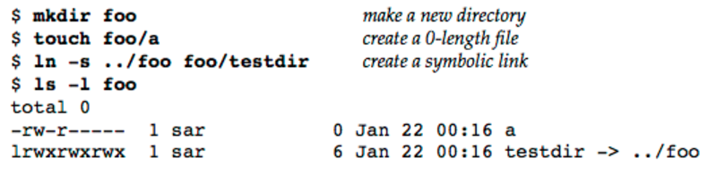
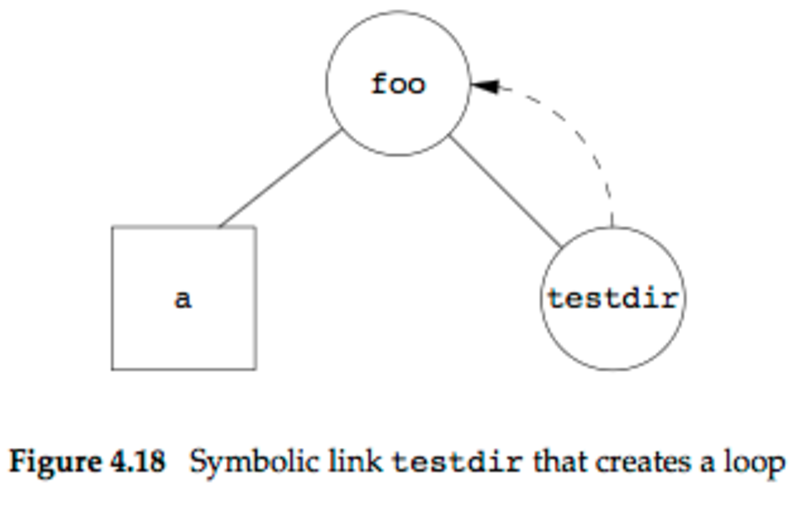

reading schedule and notes
2 STARTED Advanced Programming in the Unix Environment, Third Edition
2.1 STARTED chapter 04 文件和目录
2.1.1 DONE 4.10 Sticky Bit
2.1.2 DONE 4.11 chown, fchown, fchownat and lchown Functions
- results: change a file's user ID and group ID.
- when the referenced file is a symbolic link, lchown and fchownat (with ATSYMLINKNOFOLLOW flag set) only change the owners of the symbolic link itself, not the file pointed to by the symbolic link.
- what if _POSIXCHOWNRESTRICTED is in effect?
2.1.3 DONE 4.12 File Size
- for a symbolic link, the file size is the number of bits in the filename.
- holes in a file
2.1.4 DONE 4.13 File Truncation
- a special case of truncation: open a file with the OTRUNC flag to empty a file.
- functions: truncate() and ftruncate().
2.1.5 DONE 4.14 File Systems
- i-nodes: the i-nodes are fixed-length entries that contain most of the information about a file.
- notice:
- each i-node has a link count that contains the number of directory entries that point to it. only when the link count goes to 0 can the file be deleted. these types of links are called hard links.
- the other type of link is called a symbolic link.
- only two items of interest are stored in the directory entry: the filename and the i-node number.
- because the i-node number in the directory entry points to an i-node in the same file system, a directory entry can't refer to an i-node in a different file system.
- when renaming a file without changing file system, the actual contents of the file needn't be moved ==> all that need to be done is to add a new directory entry that points to the existing i-node and then unlink the old directory entry.
- what about the link count field of a directory?
- any *leaf directory*(a directory that does not contain any other directories) always has a link count of 2: the directory entry that names te directory and the entry for dot in that directory.
- each subdirectory in a parent directory causes the parent directory's link count to be increased by 1. (.. entry added)
2.1.6 DONE 4.15 link, linkat, unlink, unlinkat, and remove Functions
- link and linkat
- only the last component of the newpath is created, the rest of the path must already exist.
- when the existing file is a symbolic link, the flag argument controls whether the linkat function creates a link to the symbolic link or to the file to which the symbolic link points.
- the creation of the new directory entry and the increment of the link count must be an atomic operation.
- if supports the creation of hard links to directories, it may cause loops in the file system. many file system implementations disallow hard links to directories for this reason.
- unlink and unlinkat
- conditions that prevents the contents of the file from being deleted:
- link count > 0
- some process has the file open
2.1.7 DONE 4.16 rename and renameat Functions
- depending on whether oldname refers to a file, a directory, or a symbolic link, and what if newname already exist.
2.1.8 STARTED 4.17 Symbolic Links
- differences between symbolic links and hard links:

a symbolic link is an indirect pointer to a file, unlike the hard links which point directly to the i-node of the file.
- when using functions that refer to a file by name, we always need to know whether the function follows a symbolic link.
- notice: using symbolic links may introduce loops into the file system.


3 TODO Understanding the linux kernel, Third Edition (kernel version: 2.6.11)
4 TODO Linux Kernel Development, Third Edition (kernel version: 2.6.34)
Author: lightjames
Created: 2016-12-09 Fri 11:08
Validate